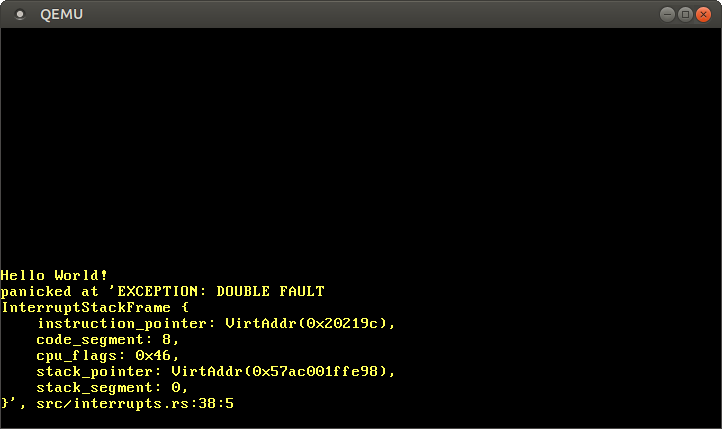

Double Faults
この記事は翻訳されたものです： この記事はDouble Faultsをコミュニティの手により翻訳したものです。そのため、翻訳が完全・最新でなかったり、原文にない誤りを含んでいる可能性があります。問題があればこのissue上で報告してください！
翻訳者： @garasubo.
この記事ではCPUが例外ハンドラの呼び出しに失敗したときに起きる、ダブルフォルト例外について詳細に見ていきます。この例外を処理することによって、システムリセットを起こす重大なトリプルフォルトを避けることができます。あらゆる場合においてトリプルフォルトを防ぐために、ダブルフォルトを異なるカーネルスタック上でキャッチするための割り込みスタックテーブルをセットアップしていきます。
このブログの内容は GitHub 上で公開・開発されています。何か問題や質問などがあれば issue をたててください（訳注: リンクは原文(英語)のものになります）。またこちらにコメントを残すこともできます。この記事の完全なソースコードはpost-06 ブランチにあります。
目次
🔗ダブルフォルトとは
簡単に言うとダブルフォルトとはCPUが例外ハンドラを呼び出すことに失敗したときに起きる特別な例外です。例えば、ページフォルトが起きたが、ページフォルトハンドラが割り込みディスクリプタテーブル（IDT: Interrupt Descriptor Table）に登録されていないときに発生します。つまり、C++でのcatch(...)や、JavaやC#のcatch(Exception e)ような、例外のあるプログラミング言語のcatch-allブロックのようなものです。
ダブルフォルトは通常の例外のように振る舞います。ベクター番号8を持ち、IDTに通常のハンドラ関数として定義できます。ダブルフォルトがうまく処理されないと、より重大な例外であるトリプルフォルトが起きてしまうため、ダブルフォルトハンドラを設定することはとても重要です。トリプルフォルトはキャッチできず、ほとんどのハードウェアはシステムリセットを起こします。
🔗ダブルフォルトを起こす
ハンドラ関数を定義していない例外を発生させることでダブルフォルトを起こしてみましょう。
// in src/main.rs
#[no_mangle]
pub extern "C" fn _start() -> ! {
println!("Hello World{}", "!");
blog_os::init();
// ページフォルトを起こす
unsafe {
*(0xdeadbeef as *mut u64) = 42;
};
// 前回同様
#[cfg(test)]
test_main();
println!("It did not crash!");
loop {}
}
不正なアドレスである0xdeadbeefに書き込みを行うためunsafeを使います。この仮想アドレスはページテーブル上で物理アドレスにマップされていないため、ページフォルトが発生します。私達のIDTにはページフォルトが登録されていないため、ダブルフォルトが発生します。
今、私達のカーネルを起動すると、ブートループが発生します。この理由は以下の通りです：
- CPUが
0xdeadbeefに書き込みを試みページフォルトを起こします。 - CPUはIDTに対応するエントリを探しに行き、ハンドラ関数が指定されていないことを発見します。結果、ページフォルトハンドラが呼び出せず、ダブルフォルトが発生します。
- CPUはダブルフォルトハンドラのIDTエントリを見にいきますが、このエントリもハンドラ関数を指定していません。結果、トリプルフォルトが発生します。
- トリプルフォルトは重大なエラーなので、QEMUはほとんどの実際のハードウェアと同様にシステムリセットを行います。
このトリプルフォルトを防ぐためには、ページフォルトかダブルフォルトのハンドラ関数を定義しないといけません。私達はすべての場合におけるトリプルフォルトを防ぎたいので、適切に処理できなかったすべての例外において呼び出されることになるダブルフォルトハンドラを定義するところからはじめましょう。
🔗ダブルフォルトハンドラ
ダブルフォルトは通常のエラーコードのある例外なので、ブレークポイントハンドラと同じようにハンドラ関数を指定することができます。
// in src/interrupts.rs
lazy_static! {
static ref IDT: InterruptDescriptorTable = {
let mut idt = InterruptDescriptorTable::new();
idt.breakpoint.set_handler_fn(breakpoint_handler);
idt.double_fault.set_handler_fn(double_fault_handler); // new
idt
};
}
// new
extern "x86-interrupt" fn double_fault_handler(
stack_frame: InterruptStackFrame, _error_code: u64) -> !
{
panic!("EXCEPTION: DOUBLE FAULT\n{:#?}", stack_frame);
}
私達のハンドラは短いエラーメッセージを出力して、例外スタックフレームをダンプします。ダブルフォルトハンドラのエラーコードは常に0なので、出力する必要はないでしょう。ブレークポイントハンドラとの違いの一つは、ダブルフォルトハンドラは発散する（diverging）（訳注: 翻訳当時、リンク先未訳）ということです。x86_64アーキテクチャではダブルフォルト例外から復帰することができないためです。
ここで私達のカーネルを起動すると、ダブルフォルトハンドラが呼び出されていることがわかることでしょう。

動きました！ここで何が起きているかというと、
- CPUが
0xdeadbeefに書き込みを試みページフォルトを起こします。 - 以前と同様に、CPUはIDT中の対応するエントリを見にいきますが、ハンドラ関数が定義されていないことを発見し、結果、ダブルフォルトが起きます。
- 今回はダブルフォルトハンドラが指定されているので、CPUはそれを適切に呼び出せます。
CPUはダブルフォルトハンドラを呼べるようになったので、トリプルフォルト（とブートループ）はもう起こりません。
ここまでは簡単です。ではなぜこの例外のために丸々一つの記事を用意したのでしょうか？実は、私達はほとんどのダブルフォルトをキャッチすることはできますが、このアプローチでは十分でないケースがいくつか存在するのです。
🔗ダブルフォルトの原因
特別なケースを見ていく前に、ダブルフォルトの正確な原因を知る必要があります。ここまで、私達はとてもあいまいな定義を使ってきました。
ダブルフォルトとはCPUが例外ハンドラを呼び出すことに失敗したときに起きる特別な例外です。
「呼び出すことに失敗する」 とは正確には何を意味するのでしょうか？ハンドラが存在しない？ハンドラがスワップアウトされた？また、ハンドラ自身が例外を発生させたらどうなるのでしょうか？
例えば以下のようなことが起こるとどうなるでしょう？
- ブレークポイント例外が発生したが、対応するハンドラがスワップアウトされていたら？
- ページフォルトが発生したが、ページフォルトハンドラがスワップアウトされていたら？
- ゼロ除算ハンドラがブレークポイント例外を起こしたが、ブレークポイントハンドラがスワップアウトされていたら？
- カーネルがスタックをオーバーフローさせてガードページにヒットしたら？
幸いにもAMD64のマニュアル（PDF）には正確な定義が書かれています（8.2.9章）。それによると「ダブルフォルト例外は直前の（一度目の）例外ハンドラの処理中に二度目の例外が発生したとき起きうる （can occur）」と書かれています。起きうるというのが重要で、とても特別な例外の組み合わせでのみダブルフォルトとなります。この組み合わせは以下のようになっています。
| 最初の例外 | 二度目の例外 |
|---|---|
| ゼロ除算, 無効TSS, セグメント不在, スタックセグメントフォルト, 一般保護違反 | 無効TSS, セグメント不在, スタックセグメントフォルト, 一般保護違反 |
| ページフォルト | ページフォルト, 無効TSS, セグメント不在, スタックセグメントフォルト, 一般保護違反 |
例えばゼロ除算例外に続いてページフォルトが起きた場合は問題ありません（ページフォルトハンドラが呼び出される）が、ゼロ除算例外に続いて一般保護違反が起きた場合はダブルフォルトが発生します。
この表を見れば、先程の質問のうち最初の３つに答えることができます：
- ブレークポイント例外が発生して、対応するハンドラ関数がスワップアウトされている場合、ページフォルトが発生してページフォルトハンドラが呼び出される
- ページフォルトが発生してページフォルトハンドラがスワップアウトされている場合、ダブルフォルトが発生してダブルフォルトハンドラが呼び出されます。
- ゼロ除算ハンドラがブレークポイント例外を発生させた場合、CPUはブレークポイントハンドラを呼び出そうとします。もしブレークポイントハンドラがスワップアウトされている場合、ページフォルトが発生してページフォルトハンドラが呼び出されます。
実際、IDTにハンドラ関数が指定されていない例外のケースでもこの体系に従っています。つまり、例外が発生したとき、CPUは対応するIDTエントリを読み込みにいきます。このエントリは0であり正しいIDTエントリではないので、一般保護違反が発生します。私達は一般保護違反のハンドラも定義していないので、新たな一般保護違反が発生します。表によるとこれはダブルフォルトを起こします。
🔗カーネルスタックオーバーフロー
4つ目の質問を見てみましょう。
カーネルがスタックをオーバーフローさせてガードページにヒットしたら？
ガードページはスタックの底にある特別なメモリページで、これによってスタックオーバーフローを検出することができます。このページはどの物理メモリにもマップされていないので、アクセスすることで警告なく他のメモリを破壊する代わりにページフォルトが発生します。ブートローダーはカーネルスタックのためにガードページをセットアップするので、スタックオーバーフローはページフォルトを発生させることになります。
ページフォルトが起きるとCPUはIDT内のページフォルトハンドラを探しにいき、割り込みスタックフレーム（訳注: 翻訳当時、リンク先未訳）をスタック上にプッシュしようと試みます。しかし、このスタックポインタは存在しないガードページを指しています。結果、二度目のページフォルトが発生して、ダブルフォルトが起きます（上の表によれば）。
そして、ここでCPUはダブルフォルトハンドラを呼びにいきます。しかし、ダブルフォルト例外においてもCPUは例外スタックフレームをプッシュしようと試みます。スタックポインタはまだガードページを指しているので、三度目のページフォルトが起きて、トリプルフォルトを発生させシステムは再起動します。そのため、私達の今のダブルフォルトハンドラではこの場合でのトリプルフォルトを避けることができません。
実際にやってみましょう。カーネルスタックオーバーフローは無限に再帰する関数を呼び出すことによって簡単に引き起こせます：
// in src/main.rs
#[no_mangle] // この関数の名前修飾をしない
pub extern "C" fn _start() -> ! {
println!("Hello World{}", "!");
blog_os::init();
fn stack_overflow() {
stack_overflow(); // 再帰呼び出しのために、リターンアドレスがプッシュされる
}
// スタックオーバーフローを起こす
stack_overflow();
[…] // test_main(), println(…), and loop {}
}
これをQEMUで試すと、再びブートループに入るのがわかります。
では、私達はどうすればこの問題を避けられるでしょうか？例外スタックフレームをプッシュすることは、CPU自身が行ってしまうので、省略できません。つまりどうにかしてダブルフォルト例外が発生したときスタックが常に正常であることを保証する必要があります。幸いにもx86_64アーキテクチャにはこの問題の解決策があります。
🔗スタックを切り替える
x86_64アーキテクチャは例外発生時に予め定義されている既知の正常なスタックに切り替えることができます。この切り替えはハードウェアレベルで発生するので、CPUが例外スタックフレームをプッシュする前に行うことができます。
切り替えの仕組みは割り込みスタックテーブル（IST: Interrupt Stack Table）として実装されています。ISTは７つの既知の正常なポインタのテーブルです。Rust風の疑似コードで表すとこのようになります：
struct InterruptStackTable {
stack_pointers: [Option<StackPointer>; 7],
}
各例外ハンドラに対して、私達は対応するIDTエントリ（訳注: 翻訳当時、リンク先未訳）のstack_pointersフィールドを通してISTからスタックを選ぶことができます。例えば、IST中の最初のスタックをダブルフォルトハンドラのために使うことができます。そうすると、CPUがダブルフォルトが発生したときは必ず、このスタックに自動的に切り替えを行います。この切り替えは何かがプッシュされる前に起きるので、トリプルフォルトを防ぐことになります。
🔗ISTとTSS
割り込みスタックテーブル（IST）は タスクステートセグメント（TSS）というレガシーな構造体の一部です。TSSはかつては様々な32ビットモードでのタスクに関する情報（例：プロセッサのレジスタの状態）を保持していて、例えばハードウェアコンテキストスイッチングに使われていました。しかし、ハードウェアコンテキストスイッチングは64ビットモードではサポートされなくなり、TSSのフォーマットは完全に変わりました。
x86_64ではTSSはタスク固有の情報は全く持たなくなりました。代わりに、2つのスタックテーブル（ISTがその1つ）を持つようになりました。唯一32ビットと64ビットのTSSで共通のフィールドはI/Oポート許可ビットマップへのポインタのみです。
64ビットのTSSは下記のようなフォーマットです：
| フィールド | 型 |
|---|---|
| (予約済み) | u32 |
| 特権スタックテーブル | [u64; 3] |
| (予約済み) | u64 |
| 割り込みスタックテーブル | [u64; 7] |
| (予約済み) | u64 |
| (予約済み) | u16 |
| I/Oマップベースアドレス | u16 |
特権スタックテーブルは特権レベルが変わった際にCPUが使用します。例えば、CPUがユーザーモード（特権レベル3）の時に例外が発生した場合、CPUは通常例外ハンドラを呼び出す前にカーネルモード（特権レベル0）に切り替わります。この場合、CPUは特権レベルスタックテーブルの0番目のスタックに切り替わります。ユーザーモードについてはまだ実装してないため、このテープルはとりあえず無視しておきましょう。
🔗TSSをつくる
割り込みスタックテーブルにダブルフォルト用のスタックを含めた新しいTSSをつくってみましょう。そのためにはTSS構造体が必要です。幸いにも、すでにx86_64クレートにTaskStateSegment構造体が含まれているので、これを使っていきます。
新しいgdtモジュール内でTSSをつくります（名前の意味は後でわかるでしょう）：
// in src/lib.rs
pub mod gdt;
// in src/gdt.rs
use x86_64::VirtAddr;
use x86_64::structures::tss::TaskStateSegment;
use lazy_static::lazy_static;
pub const DOUBLE_FAULT_IST_INDEX: u16 = 0;
lazy_static! {
static ref TSS: TaskStateSegment = {
let mut tss = TaskStateSegment::new();
tss.interrupt_stack_table[DOUBLE_FAULT_IST_INDEX as usize] = {
const STACK_SIZE: usize = 4096 * 5;
static mut STACK: [u8; STACK_SIZE] = [0; STACK_SIZE];
let stack_start = VirtAddr::from_ptr(unsafe { &STACK });
let stack_end = stack_start + STACK_SIZE;
stack_end
};
tss
};
}
Rustの定数評価機はこの初期化をコンパイル時に行うことがまだできないのでlazy_staticを使います。ここでは0番目のISTエントリをダブルフォルト用のスタックとして定義します（他のISTのインデックスでも動くでしょう）。そして、ダブルフォルト用スタックの先頭アドレスを0番目のエントリに書き込みます。先頭アドレスを書き込むのはx86のスタックは下、つまり高いアドレスから低いアドレスに向かって伸びていくからです。
私達はまだメモリ管理を実装していません。そのため、新しいスタックを確保する適切な方法がありません。その代わり今回は、スタックのストレージとしてstatic mutな配列を使います。コンパイラが変更可能な静的変数がアクセスされるとき競合がないことを保証できないためunsafeが必要となります。これが不変のstaticではなくstatic mutであることは重要です。そうでなければブートローダーはこれをリードオンリーのページにマップしてしまうからです。私達は後の記事でこの部分を適切なスタック確保処理に置き換えます。そうすればこの部分でのunsafeは必要なくなります。
ちなみに、このダブルフォルトスタックはスタックオーバーフローに対する保護をするガードページを持ちません。つまり、スタックオーバーフローがスタックより下のメモリを破壊するかもしれないので、私達はダブルフォルトハンドラ内でスタックを多用すべきではないということです。
🔗TSSを読み込む
新しいTSSをつくったので、CPUにそれを使うように教える方法が必要です。残念ながら、これはちょっと面倒くさいです。なぜならTSSは（歴史的な理由で）セグメンテーションシステムを使うためです。テーブルを直接読み込むのではなく、新しいセグメントディスクリプタをグローバルディスクリプタテーブル（GDT: Global Descriptor Table）に追加する必要があります。そうすると各自のGDTインデックスでltr命令を呼び出すことで私達のTSSを読み込むことができます。
🔗グローバルディスクリプタテーブル
グローバルディスクリプタテーブル（GDT）はページングがデファクトスタンダードになる以前は、メモリセグメンテーションのため使われていた古い仕組みです。カーネル・ユーザーモードの設定やTSSの読み込みなど、様々なことを行うために64ビットモードでも未だに必要です。
GDTはプログラムのセグメントを含む構造です。ページングが標準になる以前に、プログラム同士を独立させるためにより古いアーキテクチャで使われていました。セグメンテーションに関するより詳しい情報は無料の「Three Easy Pieces」という本の同じ名前の章を見てください。セグメンテーションは64ビットモードではもうサポートされていませんが、GDTはまだ存在しています。GDTはカーネル空間とユーザー空間の切り替えと、TSS構造体の読み込みという主に2つのことに使われています。
🔗GDTをつくる
TSSの静的変数のセグメントを含む静的GDTをつくりましょう：
// in src/gdt.rs
use x86_64::structures::gdt::{GlobalDescriptorTable, Descriptor};
lazy_static! {
static ref GDT: GlobalDescriptorTable = {
let mut gdt = GlobalDescriptorTable::new();
gdt.add_entry(Descriptor::kernel_code_segment());
gdt.add_entry(Descriptor::tss_segment(&TSS));
gdt
};
}
先に紹介したコードと同様に、再びlazy_staticを使います。コードセグメントとTSSセグメントを持つ新しいGDTを作成します。
🔗GDTを読み込む
GDTを読み込むために新しくgdt::init関数をつくり、これをinit関数から呼び出します：
// in src/gdt.rs
pub fn init() {
GDT.load();
}
// in src/lib.rs
pub fn init() {
gdt::init();
interrupts::init_idt();
}
これでGDTが読み込まれます（_start関数はinitを呼び出すため）が、これではまだスタックオーバーフローでブートループが起きてしまいます。
🔗最後のステップ
問題はGDTセグメントとTSSレジスタが古いGDTからの値を含んでいるため、GDTセグメントがまだ有効になっていないことです。ダブルフォルト用のIDTエントリが新しいスタックを使うように変更する必要もあります。
まとめると、私達は次のようなことをする必要があります：
- コードセグメントレジスタを再読み込みする：GDTを変更したので、コードセグメントレジスタ
csを再読み込みする必要があります。これは、古いセグメントセレクタが異なるGDTディスクリプタ（例：TSSディスクリプタ）を指す可能性があるためです。 - TSSをロードする：TSSセレクタを含むGDTをロードしましたが、CPUにこのTSSを使うよう教えてあげる必要があります。
- IDTエントリを更新する：TSSがロードされると同時に、CPUは正常な割り込みスタックテーブル（IST）へアクセスできるようになります。そうしたら、ダブルフォルトIDTエントリを変更することで、CPUに新しいダブルフォルトスタックを使うよう教えてあげることができます。
最初の２つのステップのために、私達はgdt::init関数の中でcode_selectorとtss_selector変数にアクセスする必要があります。これは、その変数たちを新しいSelectors構造体を使い静的変数にすることで実装できます：
// in src/gdt.rs
use x86_64::structures::gdt::SegmentSelector;
lazy_static! {
static ref GDT: (GlobalDescriptorTable, Selectors) = {
let mut gdt = GlobalDescriptorTable::new();
let code_selector = gdt.add_entry(Descriptor::kernel_code_segment());
let tss_selector = gdt.add_entry(Descriptor::tss_segment(&TSS));
(gdt, Selectors { code_selector, tss_selector })
};
}
struct Selectors {
code_selector: SegmentSelector,
tss_selector: SegmentSelector,
}
これで私達はcsセグメントレジスタを再読み込みしTSSを読み込むためにセレクタを使うことができます：
// in src/gdt.rs
pub fn init() {
use x86_64::instructions::segmentation::set_cs;
use x86_64::instructions::tables::load_tss;
GDT.0.load();
unsafe {
set_cs(GDT.1.code_selector);
load_tss(GDT.1.tss_selector);
}
}
set_csを使ってコードセグメントレジスタを再読み込みして、load_tssを使ってTSSを読み込んでいます。これらの関数はunsafeとマークされているので、呼び出すにはunsafeブロックが必要です。unsafeなのは、不正なセレクタを読み込むことでメモリ安全性を壊す可能性があるからです。
これで正常なTSSと割り込みスタックテーブルを読み込んだので、私達はIDT内のダブルフォルトハンドラにスタックインデックスをセットすることができます：
// in src/interrupts.rs
use crate::gdt;
lazy_static! {
static ref IDT: InterruptDescriptorTable = {
let mut idt = InterruptDescriptorTable::new();
idt.breakpoint.set_handler_fn(breakpoint_handler);
unsafe {
idt.double_fault.set_handler_fn(double_fault_handler)
.set_stack_index(gdt::DOUBLE_FAULT_IST_INDEX); // new
}
idt
};
}
set_stack_indexメソッドは呼び出し側が、使われているインデックスが正しいものであり、かつ他の例外で使われていないかを確かめる必要があるため、unsafeです。
これで全部です。CPUはダブルフォルトが発生したら常にダブルフォルトスタックに切り替えるでしょう。よって、私達はカーネルスタックオーバーフローを含むすべてのダブルフォルトをキャッチすることができます。

これからはトリプルフォルトを見ることは二度とないでしょう。これらダブルフォルトのための実装を誤って壊していないことを保証するために、テストを追加しましょう。
🔗スタックオーバーフローテスト
新しいgdtモジュールをテストしダブルフォルトハンドラがスタックオーバーフローで正しく呼ばれることを保証するために、結合テストを追加します。ここでの考えは、テスト関数内でダブルフォルトを引き起こしダブルフォルトハンドラが呼び出されていることを確かめる、というものです。
最小の骨組みから始めましょう：
// in tests/stack_overflow.rs
#![no_std]
#![no_main]
use core::panic::PanicInfo;
#[no_mangle]
pub extern "C" fn _start() -> ! {
unimplemented!();
}
#[panic_handler]
fn panic(info: &PanicInfo) -> ! {
blog_os::test_panic_handler(info)
}
panic_handlerのテストと同様、テストはテストハーネスなしで実行されます。理由は私達はダブルフォルト後に実行を続けることができず、２つ以上のテストは意味をなさないためです。テストハーネスを無効にするために、以下をCargo.tomlに追加します：
# in Cargo.toml
[[test]]
name = "stack_overflow"
harness = false
これでcargo test --test stack_overflowでのコンパイルは成功するでしょう。unimplementedマクロがパニックを起こすため、テストはもちろん失敗します。
🔗_startを実装する
_start関数の実装はこのようになります：
// in tests/stack_overflow.rs
use blog_os::serial_print;
#[no_mangle]
pub extern "C" fn _start() -> ! {
serial_print!("stack_overflow::stack_overflow...\t");
blog_os::gdt::init();
init_test_idt();
// スタックオーバーフローを起こす
stack_overflow();
panic!("Execution continued after stack overflow");
}
#[allow(unconditional_recursion)]
fn stack_overflow() {
stack_overflow(); // 再帰のたびにリターンアドレスがプッシュされる
volatile::Volatile::new(0).read(); // 末尾最適化を防ぐ
}
新しいGDTを初期化するためにgdt::init関数を呼びます。そしてinterrupts::init_idt関数を呼び出す代わりに、すぐ後で説明するinit_test_idt関数を呼びます。なぜなら、私達はパニックの代わりにexit_qemu(QemuExitCode::Success)を実行するカスタムしたダブルフォルトハンドラを登録したいためです。
stack_overflow関数はmain.rsの中にある関数とほとんど同じです。唯一の違いは末尾呼び出し最適化と呼ばれるコンパイラの最適化を防ぐためにVolatileタイプを使って関数の末尾で追加のvolatile読み込みを行っていることです。この最適化の特徴として、コンパイラが、最後の文が再帰関数呼び出しである関数を通常のループに変換できるようになる、というものがあります。その結果として、追加のスタックフレームが関数呼び出しではつくられず、スタックの使用量が変わらないままとなります。
しかし、ここではスタックオーバーフローを起こしたいので、コンパイラに削除されない、ダミーのvolatile読み込み文を関数の末尾に追加します。その結果、関数は末尾再帰ではなくなり、ループへの変換は防がれます。更に関数が無限に再帰することに対するコンパイラの警告をなくすためにallow(unconditional_recursion)属性を追加します。
🔗IDTのテスト
上で述べたように、テストはカスタムしたダブルフォルトハンドラを含む専用のIDTが必要です。実装はこのようになります：
// in tests/stack_overflow.rs
use lazy_static::lazy_static;
use x86_64::structures::idt::InterruptDescriptorTable;
lazy_static! {
static ref TEST_IDT: InterruptDescriptorTable = {
let mut idt = InterruptDescriptorTable::new();
unsafe {
idt.double_fault
.set_handler_fn(test_double_fault_handler)
.set_stack_index(blog_os::gdt::DOUBLE_FAULT_IST_INDEX);
}
idt
};
}
pub fn init_test_idt() {
TEST_IDT.load();
}
実装はinterrupts.rs内の通常のIDTと非常に似ています。通常のIDT同様、分離されたスタックに切り替えるようダブルフォルトハンドラ用のISTにスタックインデックスをセットします。init_test_idt関数はloadメソッドによりCPU上にIDTを読み込みます。
🔗ダブルフォルトハンドラ
唯一欠けているのはダブルフォルトハンドラです。このようになります：
// in tests/stack_overflow.rs
use blog_os::{exit_qemu, QemuExitCode, serial_println};
use x86_64::structures::idt::InterruptStackFrame;
extern "x86-interrupt" fn test_double_fault_handler(
_stack_frame: InterruptStackFrame,
_error_code: u64,
) -> ! {
serial_println!("[ok]");
exit_qemu(QemuExitCode::Success);
loop {}
}
ダブルフォルトハンドラが呼ばれるとき、私達はQEMUを正常な終了コードで終了し、テストを成功とマークします。結合テストは完全に分けられた実行ファイルなので、私達はテストファイルの先頭で#![feature(abi_x86_interrupt)]属性を再びセットする必要があります。
これで私達はcargo test --test stack_overflow（もしくは全部のテストを走らせるようcargo test）でテストを走らせることができます。期待していたとおり、stack_overflow... [ok]とコンソールに出力されるのがわかります。set_stack_indexの行をコメントアウトすると、テストは失敗するでしょう。
🔗まとめ
この記事では私達はダブルフォルトが何であるかとどういう条件下で発生するかを学びました。エラーメッセージを出力する基本的なダブルフォルトハンドラと、そのための結合テストを追加しました。
また、私達はスタックオーバーフロー下でも動くよう、ダブルフォルト発生時にハードウェアがサポートするスタック切り替えを行うようにしました。実装していく中で、古いアーキテクチャでのセグメンテーションで使われていたタスクステートセグメント（TSS）、割り込みスタックテーブル（IST）、グローバルディスクリプタテーブル（GDT）についても学びました。
🔗次は？
次の記事ではタイマーやキーボード、ネットワークコントローラのような、外部デバイスからの割り込みをどのように処理するかを説明します。これらのハードウェア割り込みは例外によく似ています。例えば、これらもIDTからディスパッチされます。しかしながら、例外とは違い、それらはCPU上で直接発生するものではありません。代わりに、割り込みコントローラがこれらの割り込みを集めて、優先度によってそれらをCPUに送ります。次回、私達はIntel 8259（PIC）割り込みコントローラを調べ、どのようにキーボードのサポートを実装するかを学びます。
コメント
Do you have a problem, want to share feedback, or discuss further ideas? Feel free to leave a comment here! Please stick to English and follow Rust's code of conduct. This comment thread directly maps to a discussion on GitHub, so you can also comment there if you prefer.
Instead of authenticating the giscus application, you can also comment directly on GitHub.
可能な限りコメントは英語で残すようにしてください。